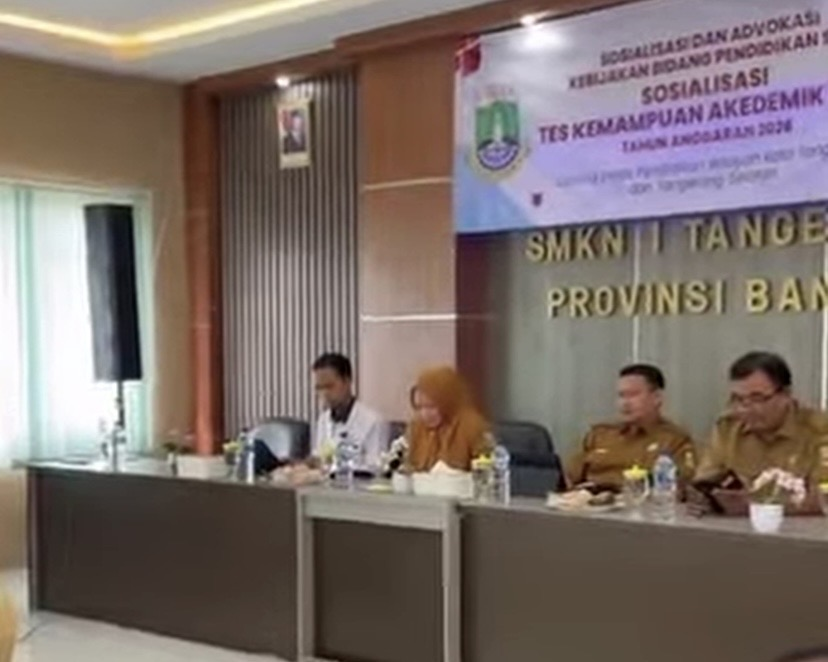

|
Website ZivankaAll About Me.
|
|
| Beranda | Tentang Saya | Sekolahku | Syair Lagu | |
Sosialisasi TKA SMK Negeri 1 TangerangSenin, 21 September 2026 SMKN 1 Tangerang sukses menjadi tuan rumah Pertemuan Kepala SMK dan Sosialisasi Tes Kemampuan Akademik (TKA) Tahun 2026 pada Senin (21/9/2026). Agenda ini dihadiri oleh jajaran Kepala SMK dari wilayah Kota Tangerang dan Kota Tangerang Selatan (Tangsel). Pertemuan strategis ini digelar untuk menyamakan persepsi serta mematangkan kesiapan teknis pelaksanaan TKA 2026. Melalui tes ini, capaian kompetensi dasar akademik siswa SMK di kedua wilayah tersebut akan diukur secara terstandar. epala SMKN 1 Tangerang menyambut baik kepercayaan dinas pendidikan untuk memfasilitasi acara ini. Beliau menegaskan pentingnya sinergi antar-sekolah agar lulusan SMK tidak hanya unggul dalam praktik industri, tetapi juga memiliki fondasi akademik yang kuat untuk bersaing di dunia kerja maupun perguruan tinggi. Selain memaparkan regulasi ujian, pertemuan ini juga diisi dengan diskusi interaktif mengenai tata kelola ujian berbasis digital. Acara ditutup dengan komitmen bersama dari seluruh kepala sekolah untuk menyukseskan pelaksanaan TKA 2026 demi peningkatan mutu pendidikan vokasi.  |
Tautan eksternal |
| © Zivanka Herdiansyah Putri, 2026. | |